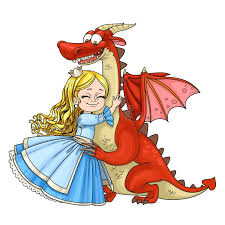
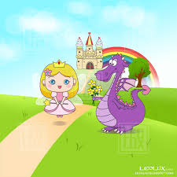

Érase una vez una princesa llamada Meredy, ella tenía un ratón como mascota. Ella era hija única, todos pensaríamos que está llena de atención de sus padres, los reyes del pueblo.

Pero la realidad era otra. Meredy pasaba la mayor parte del tiempo sola en el enorme castillo, y su ratón era su único amigo...
A pesar de la soledad, Meredy tenía una imaginación increíble. Cada rincón del castillo era para ella un escenario mágico: las escaleras eran montañas, los jardines eran bosques encantados, y el gran salón... su campo de batalla contra dragones invisibles.
Una noche, mientras observaba las estrellas desde la torre más alta, escuchó un rugido lejano. Al principio pensó que era el viento, pero su pequeño ratón —al que llamaba Niko— se escondió de inmediato. Meredy comprendió que no estaba imaginando nada.
Al día siguiente, los rumores se confirmaron: un dragón había sido visto cerca del bosque negro. Nadie se atrevía a salir del pueblo. Pero Meredy, lejos de tener miedo, sintió una chispa de emoción. Por primera vez, el mundo real parecía tan fantástico como los cuentos que ella se inventaba.
Con una capa vieja de su padre, una linterna, y a Niko escondido en su bolsillo, se escabulló del castillo al amanecer. No sabía exactamente qué haría si encontraba al dragón... pero sentía que debía descubrir qué significaba ese rugido.

Caminó durante horas entre los árboles, siguiendo las huellas y ramas quemadas. Finalmente, en un claro del bosque, lo vio: un enorme dragón rojo, herido, con una flecha clavada en su ala. Pero lo más sorprendente no fue su tamaño... sino sus ojos. No eran salvajes. Eran tristes.
Meredy se acercó lentamente. El dragón no rugió ni se movió, solo la miró con esos ojos llenos de dolor.
—No voy a hacerte daño —susurró ella, mientras sacaba un pequeño pañuelo de su bolsillo.
Con mucho cuidado, y con Niko observando desde su hombro, logró quitar la flecha del ala del dragón. Este soltó un leve suspiro, como si entendiera que Meredy no era una amenaza.
El dragón, aún débil pero agradecido, inclinó su enorme cabeza frente a Meredy. Ella no sentía miedo, sino una conexión extraña, como si se conocieran desde siempre.
—Te llamaré Flama —dijo la princesa, acariciando suavemente su escamosa frente.
Desde aquel día, Flama se volvió su protector y amigo. Lo escondió en una cueva secreta en las montañas, donde le llevaba comida, le contaba cuentos y le enseñaba palabras humanas.
Con el tiempo, Flama sanó por completo, y Meredy descubrió algo más: cuando estaban juntos, podía entender lo que él pensaba... sin que dijera una sola palabra.
Fue así como la princesa solitaria, el ratón valiente y el dragón herido comenzaron una amistad que cambiaría el destino del reino.
Meredy sabía que si sus padres descubrían a Flama, lo verían como una amenaza. Los reyes habían perdido la confianza en los dragones desde que uno destruyó un pueblo lejano muchos años atrás.
—¿Dónde has estado, Meredy? —preguntó su madre con tono preocupado. —Solo explorando el bosque... —respondió ella.
Pero los reyes se les hacia raro que saliera todas las tardes al bosque por lo que ordenaron a los guardias vigilarla. Y una tarde, uno de ellos vio a la princesa montando sobre un dragón rojo entre las nubes del atardecer.
El rey, asustado, mandó llamar a Meredy de inmediato. —¡¿Cómo pudiste esconder algo tan peligroso?! —exclamó él.
Meredy no se asustó. Dio un paso al frente y dijo con firmeza: —Flama no es peligroso. Está herido. Está solo. Como yo lo estuve.
La reina, sorprendida por el valor de su hija, miró al rey en silencio. Por primera vez, vieron no a una niña... sino a una futura líder.
Justo cuando el rey se preparaba para mandar a capturar al dragón, una sombra oscura cubrió el cielo. Un segundo dragón, mucho más grande y agresivo, descendió sobre el reino, lanzando fuego y caos.
Los soldados no podían con él. Las murallas temblaban.
Fue entonces cuando Flama apareció, volando junto a Meredy. Enfrentó al dragón invasor sin dudarlo.
La batalla fue intensa. Pero gracias a su valentía y la inteligencia de Meredy guiándolo desde el aire, Flama logró ahuyentar al intruso.
Cuando todo terminó, el pueblo aplaudía. El rey se acercó a su hija y la abrazó con fuerza. —Estaba equivocado, hija mía.
Desde aquel día, Flama fue reconocido como el guardián del reino. Meredy, con su pequeño ratón Niko y su fiel dragón, siguió explorando el mundo, no como una niña solitaria, sino como una princesa valiente... que unió dos mundos con su amistad con flama
